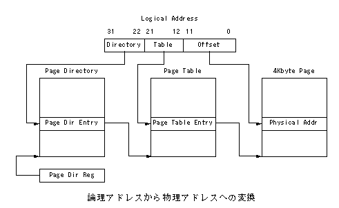
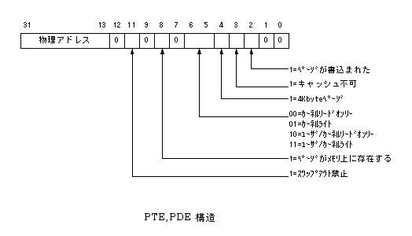
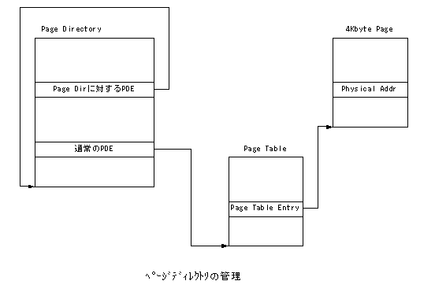

mmEye仮想記憶管理
SH3のMMUは、TLBのみでページディレクトリ、ページテーブルの管理はｿﾌﾄｳｪｱで行う必要があります。
以下に論理アドレスから物理アドレスへの変換機構を示します。

PTEおよびPDEは同一の構造で図 3に示す通りです。

ページディレクトリ/テーブルの管理
ページディレクトリは、に示すように仮想アドレスの0xCFC00000に対するページテーブルとして配置されます。

このように再帰的にページディレクトリ自身を仮想アドレス上に配置することにより、仮想アドレスの0xCFC00000〜0xCFFFFFFFをアクセスすることでページテーブルの内容を読み出すことができます。例えば、0xCFC00000は論理アドレスの0x00000000〜0x00000FFFのページテーブルに相当し、0xCFC00004は論理アドレスの0x00001000〜0x00001FFFに相当します。